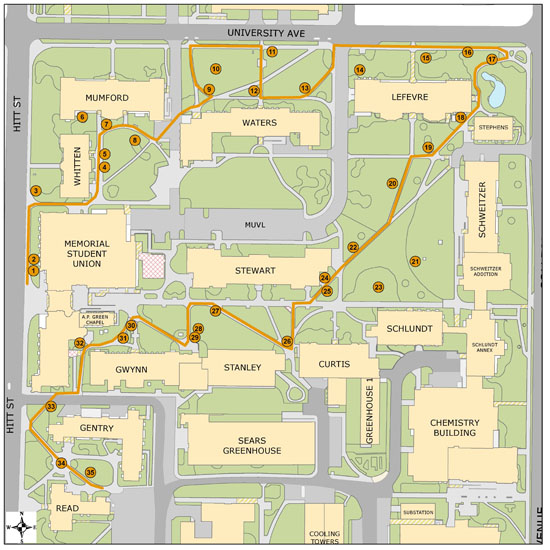
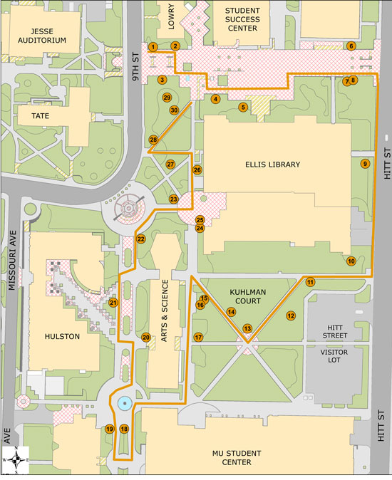
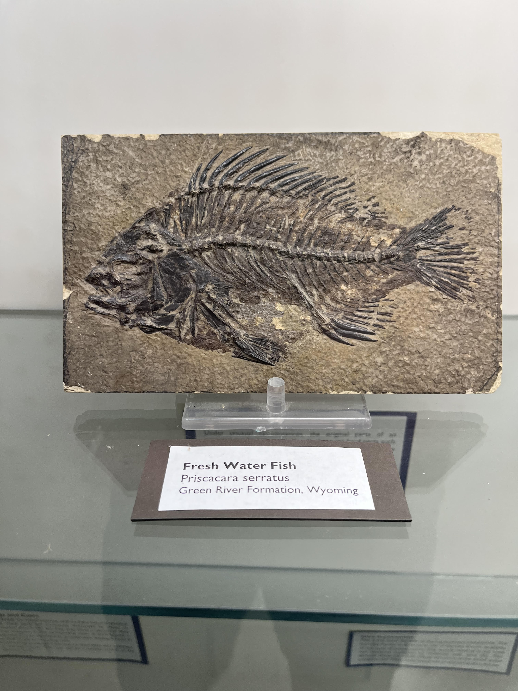
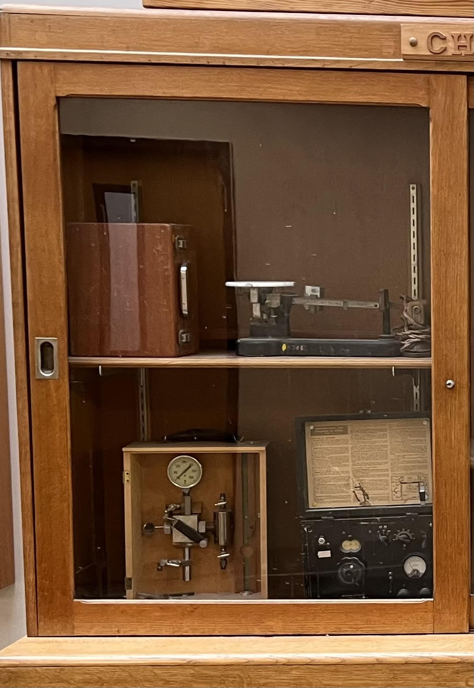
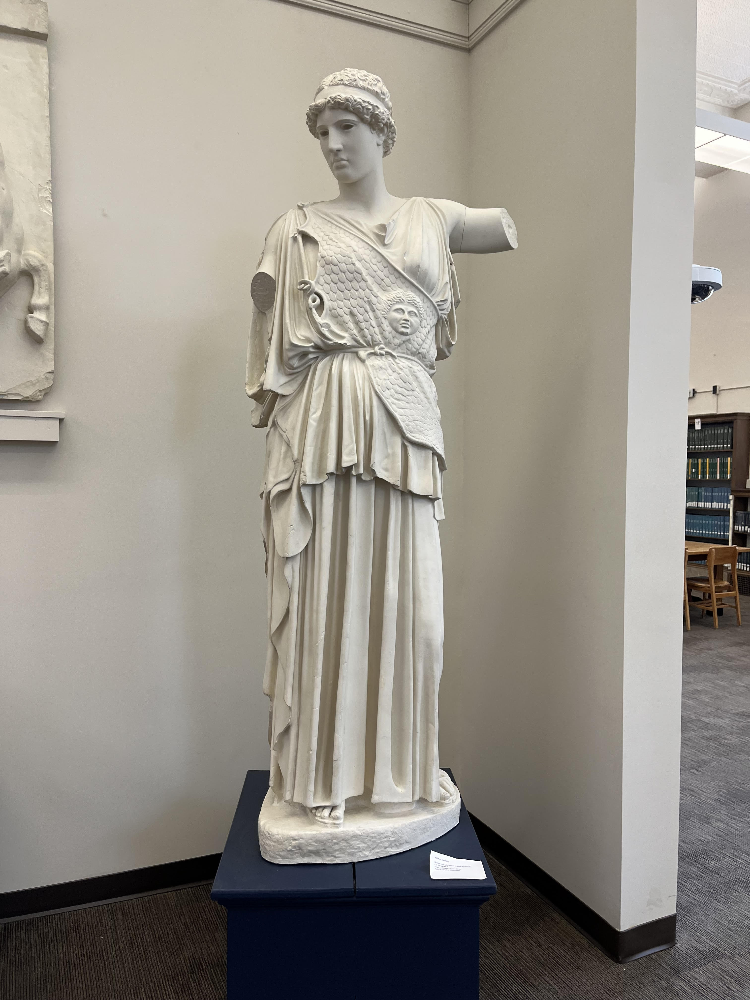
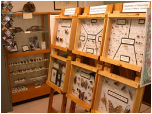
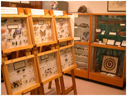
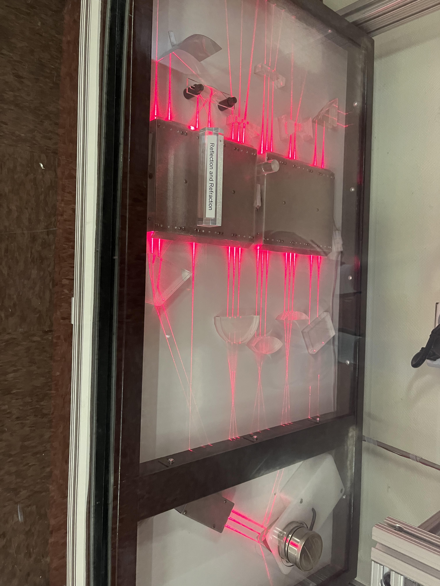
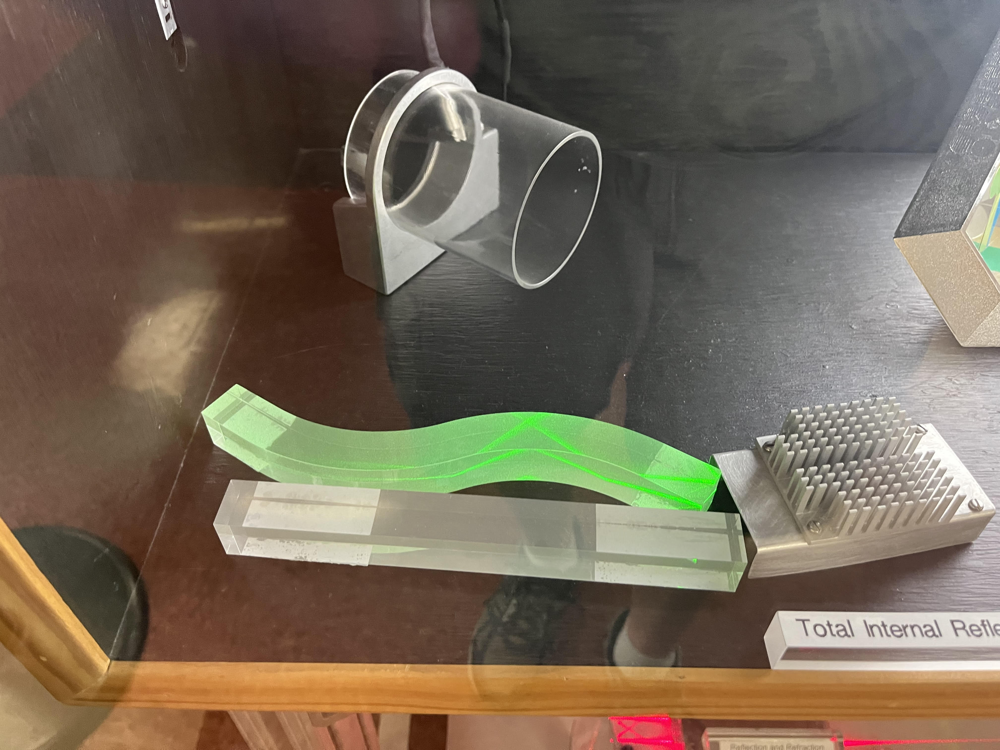
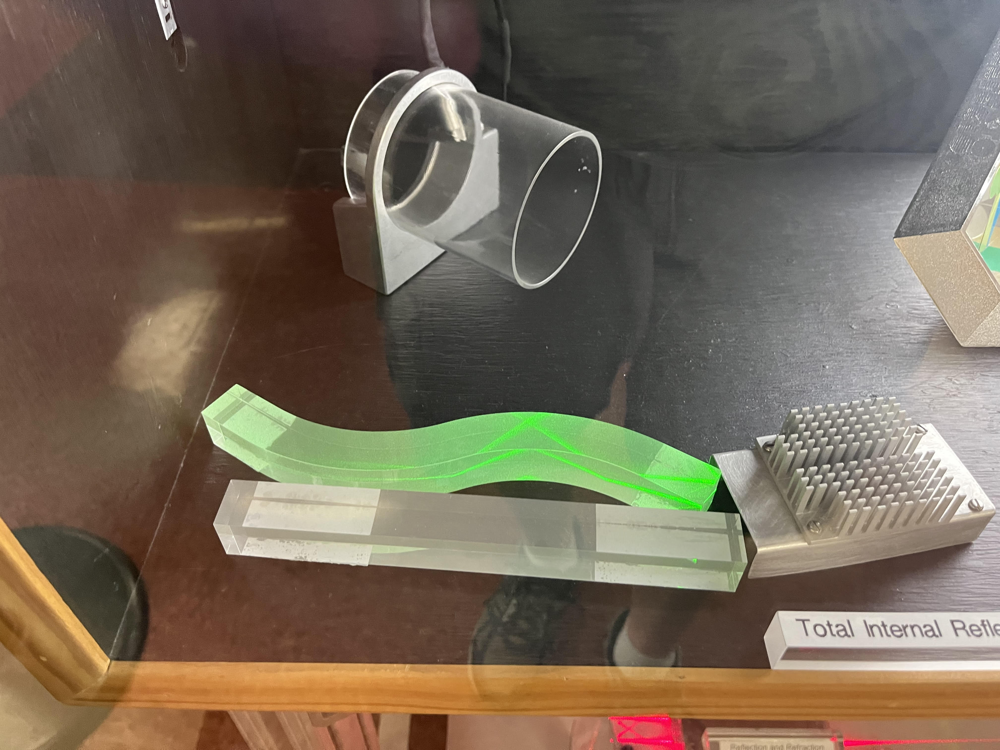

Science and Technology Exhibits Around Columbia

Click on the map above to go to an interactive map.
The best path to see all of the displays on campus in one visit is: (the best displays are bolded)
- Follow the Mizzoui Botanic Garden Tree Trails
- Geology Building
- Naka Building (Engineering West)
- Lafferre Hall
- Art & Archaeology Museum (when it opens)
- Anthropology Museum (when it opens)
- Enns Entomology Museum
- Game Animal Display
- Agricultural Engineering Building
- Physics Building
- Chemistry Building
- Biology Building
On the University of Missouri Campus
Mizzou Botanic Garden Tree Trails
Mizzou Campus
Spring, Summer, Fall
The trails consist of three loops — the Jesse Hall Loop, through the Francis Quadrangle; the Lowry Mall Loop,
centered on Ellis Library; and the Memorial Union Loop, which meanders among early 20th century limestone buildings. Trees on each
loop are identified by plaques at the base of the tree. The link below will lead you to the trail maps and tree descriptions.
This is spread across campus. The self-guided tours (available on the link above) are very helpful. This is great for
a walk across campus, whether you are interested in the trees or not.


Geologic Specimens Display
Department of Geology Building
Anytime, although this is great for a field trip when the weather is bad
There is a large collection of geological specimens including rocks, minerals and fossils in the hallway on the first
floor and the basement. The basement contains some large fossils that don't fit in a case.
On one hand, it's just rocks. But this is a pretty nice display. It's in the hallway where it's easy to get to without
feeling like you don't belong. Each specimen is labeled and the cases are well-lit. Each individual rock is a little underwhelming by itself. Although there are some nice fossils that really are interesting to
see. There are also some mineral specimens that are really nice by themselves. But the size of the display makes this well-worth seeing. At the end
of the hallway in the basement (by the stairs) is a display of fluoresent minerals which was cool when it worked, but last time I checked, it didn't.



Edison Dynamo
Naka Building
Engineering Week in the Spring, then other activities are going on
Given to the University by Thomas Edison in 1883 and used to power the first incandescent lights west of the Mississippi.
This is an impressive piece of equipment with an impressive history that you can look at from all 4 sides. Still, not a major
attraction by itself.
Engines
Lafferre Hall
Engineering Week in the Spring, then other activities are going on
Two engines are on display in the basement. One is a reverse thruster from a NASA Space Shuttle Trainer and the other
is a turbojet engine with afterburner from a T-38N aircraft used in NASA astronaut training.
These are tucked away in a corner. They are easily accessed and they have some labels identifying them. They have the
cool feel of being a part of NASA history, being big, and being powerful. But, they also kind of sit there quietly out of the way.

Chemistry Equipment
Lafferre Hall
Engineering Week in the Spring, then other activities are going on
There are actually two displays, one in a cabinet on the north wall and the other mounted on the south wall.
Perhaps the least loved displays on campus. Not lit. Not labeled. OK to look at if you happen to be in the building, or
you just want to check it off your list of everything.

Concrete Canoe
Lafferre Hall
Engineering Week in the Spring, then other activities are going on
This is on the second floor at the east side of the building.
This is an interesting conversation piece, but not something to see in isolation.
Museum of Art and Archaeoogy
Ellis Library
Anytime once it opens, although this is a great bad weather field trip.
Unfortunately, this is closed for renovation currently. However, the Ancient Case Collection is still able to be viewed on the second floor of
Ellis Library.
Website
It's hard to say currently because it is closed, but in the past, this was a full-fledged museum with lots to look at. I
have hopes that it will be great when it reopens.

Museum of Anthropology
Unfortunately, this is also closed for renovation currently.
Another great bad weather field trip.
Website
It's hard to say currently because it is closed, but in the past, this was a full-fledged museum with lots to look at. I
have hopes that it will be great when it reopens.
Enns Entomology Museum
Agriculture Building, corner of Hitt & Rollins, Room 3-38
Anytime, but good for bad weather. Combine this with the game animals in the connected building.
There is a large collection of mounted insects as well as a few live insects. See the link below for a full
description and pictures.
Apparently this collection is fairly important, but I was underwhelmed on my visit. It has been years ago.
My impression is that this is a collection for research purposes and not primarily for public viewing. This does not feel like it is
set up for the public, although the public are welcome. It is a display in a room where other things are going on. The staff there
were happy to let us take a look, but it did not have a "museum" feel to it. It does have a wide variety of interesting insects
from around the world to look at. The live hissing cockroaches were also interesting.


Game Animal Display
Anheuser-Bush Natural Resources Building
A large collection of game animals from around the world.
Anytime, great for bad weather.
This is an impressive display. There are detailed descriptions for most of the specimens. It is well-worth taking a detour to see this if you are anywhere close.


Optics Display
Physics Building
There is a small display, mostly focused on optical phenomena.
See this when you come to the Physics Open House, or visit the Laws Observatory.
If you go to the observatory on a Wednesday, or the Physics Open House in the spring, this display is worth taking
a look at. It is not well-labeled so it helps to have someone who knows what they are looking at with you to help interpret it.




Laws Observatory
Physics Building
The observatory is open to the public on most Wednesday nights.
This is a medium-sized telescope.
The professional running the telescope is happy to talk to you about the telescope and about what you are looking at.
Chemistry Equipment Display
Chemistry Building
There is a small display of old chemistry glassware. There are no labels.
See this when you come to the Physics Open House.
The glassware certainly makes you curious about how it was used. Unfortunately, there are no labels to help you out. Not worth a
visit alone, but can be combined with the physics building which is right next door.
Hawaiian Snail Shells
Biology Building (LeFevre Hall), mounted to the wall on the stair landing
Combine this with other trips, such as the chemistry and physics buidings.
A display of snail shells collected over multiple trips from the first half of the 20th century. There are maps and labels
that describe what you are looking at.
Although the subject matter is obscure, the display is beautiful and takes you back to the days of naturalists wandering
through exotic forests collecting specimens that no one knew existed, before Hawaii became a state.
Tractors
Agricultural Engineering Building
Stop by here when you visit the Veterinary School Open House on your way to get Buck's Ice Cream.
These are tractors that are built by students each year.
These are cool. You can get up close to them.
Elsewhere in Columbia
Rocks and Minerals Display
Daniel Boone Regional Library
There is a display of rocks and minerals on display, provided by the Central Missouri Rock and Lapidary Club. The contents of this
display are rotated frequently.
This is an interesting display that changes fairly frequently. Many of the specimens are beautiful. This is well-worth
taking a look at when you are at the library.

Hindman Garden
Stephens Lake Park
This is a small landscaped garden with a collection of plants from different continents, as well as signs describing Dr. 's
work.
Aquatic Features
Stephens Lake Park
There are three signs describing a rain garden, the lake, and the riparian zone scattered throughout the park.
Shelter Gardens
This is a large beautifully-landscaped garden with a lot of labeled trees and flower beds, as well as a koi pond and an
old one-room schoolhouse.
This is well-worth a visit on a beautiful day.
Limestone Cliff Face Geology
MKT trail, just south of the MLK, Jr trailhead
This is a nice display that shows the limestone and karst geology of the area and relates it to the cut that the trail passes
through just to the north of the display. The display includes examples of several fossils that can be found in the area.
Worth stopping to look at as you enjoy a ride along the MKT trail.
3M Wetland Area
MKT between the MLK, Jr trailhead and the Forum trailhead
This is a nice little wetland area with evidence of beavers in the southern half. There is a pavilion on the north edge
with several signs discussing the birds in the area. There are signs on the trail around the wetlands that discuss some of the flora and fauna that
can be seen in the area.
Worth a stop as you enjoy a ride along the MKT trail.